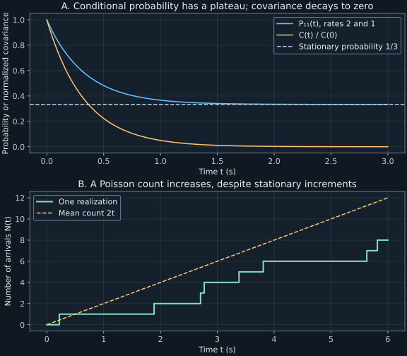

Chapter 6 · Lectures 7–8
Generators, detailed balance, and exactly soluble jump processes
A device switches between an active and inactive state. Its residence times determine both its occupancy fraction and its noise correlation time, but these time scales are different: two exit rates of two and one per second give mean stays of half a second and one second, yet a correlation time of one third of a second. A counter driven by its switching events introduces a second issue: randomizing the number of steps changes displacement variance even when the mean number of steps is fixed. Transition rates provide one model from which these distinctions can be derived.
Lectures 7–8 supply the sequence from generators and detailed balance through two-state noise, Poisson events, and biased lattice walks. Both caption tracks were read fully. The finite-generator positivity proof, stationary ring counterexample, explicit clock comparison, and numerical laboratory are added derivations and constructions. Sampled lecture stills provide partial notation coverage; independent audio review was not performed.
6.1 A conservative generator produces a probability semigroup L7 0:17
Use a finite set of $r$ states and a probability column $p(t)$. A generator $Q$ has off-diagonal rate $Q_{ij}\geq0$ for a jump from $j$ to $i$, with units inverse time, and diagonal $Q_{jj}=-\sum_{i\ne j}Q_{ij}$. Thus each column sums to zero. The master equation is $\dot p(t)=Qp(t)$, with specified initial probability column $p(0)$. The conservation row $\mathbf1^TQ=0$ gives $d\sum_ip_i/dt=0$.
Choose a rate $\Lambda\gt0$ at least as large as every exit rate $-Q_{jj}$. Then $R=I+Q/\Lambda$ is a nonnegative column-stochastic matrix. Because $I$ commutes with $R$,
$$e^{tQ}=e^{-\Lambda t}\sum_{n=0}^{\infty}\frac{(\Lambda t)^n}{n!}R^n.\tag{6.1}$$Each $R^n$ is a probability kernel. The nonnegative coefficients are Poisson masses summing to one, so their mixture is also a probability kernel. Matrix exponentials of the same fixed matrix compose as $e^{(t+s)Q}=e^{tQ}e^{sQ}$. If $Q=0$, the identity evolution is immediate. ∎
This construction is called uniformization. It embeds the state process in a Poisson clock of rate $\Lambda$, at each clock event applying $R$. Some events leave the state unchanged. Their presence is allowed because the physical generator is $\Lambda(R-I)=Q$. Increasing the auxiliary rate changes the number of artificial self-events but preserves the law of the observed state process.
A time-independent rate rule is homogeneous; starting away from an invariant law still gives a transient distribution. A finite generator with an irreducible communication graph has a unique stationary probability column and converges to it. One way to connect this to chapter 5 is to choose $\Lambda$ strictly above the maximum exit rate. Then $R$ has positive self-loops and the same irreducible graph. Its finite-chain convergence, mixed through (6.1), yields continuous-time convergence. An infinite generator needs additional existence and nonexplosion conditions; column sums alone are insufficient there.
6.2 Zero net inflow is weaker than zero pairwise current L7 16:40
A stationary probability $\pi$ satisfies $Q\pi=0$, with nonnegative entries summing to one. Define the stationary probability current from $j$ to $i$ as $J_{ij}=Q_{ij}\pi_j-Q_{ji}\pi_i$. It has units inverse time and satisfies $J_{ij}=-J_{ji}$. The stationary equation requires $\sum_{j\ne i}J_{ij}=0$ at each state: total incoming and outgoing flow balance.
Detailed balance imposes the stronger pairwise condition $Q_{ij}\pi_j=Q_{ji}\pi_i$ for every distinct pair. Each current then vanishes, immediately implying stationarity. For a connected rate graph, rate ratios can determine the probability ratios along edges, but their products around closed cycles must be consistent. A path with a zero rate cannot be handled by dividing by that rate.
A three-state clockwise ring with unit rates $1\to2\to3\to1$ has generator $Q=\left(\begin{smallmatrix}-1&0&1\\1&-1&0\\0&1&-1\end{smallmatrix}\right)$. Its stationary law is uniform because every state has one unit-rate input and output. Yet the current $J_{21}=1/3$ per second is nonzero. Probability circulates while every occupancy stays constant. Thus stationarity alone does not establish equilibrium reversibility.
If a positive stationary law satisfies detailed balance, let $\Pi$ be the diagonal matrix with entries $\pi_i$. The matrix $\Pi^{-1/2}Q\Pi^{1/2}$ is symmetric: its $(i,j)$ entry is $Q_{ij}\sqrt{\pi_j/\pi_i}$, which detailed balance makes equal to its reversed entry. The generator therefore has real eigenvalues in this case. This supplies a spectral consequence of reversibility beyond solving the stationary equations. Thermal interpretations need the physical time-reversal assumptions, including how velocities or external fields transform; an arbitrary rate network need not be a thermal bath model.
6.3 Two states can be solved without diagonalization L7 25:32
Let the process take values $c_1,c_2$ in states one and two, with exit rates $\lambda_1\gt0$ from one to two and $\lambda_2\gt0$ from two to one. Define $s=\lambda_1+\lambda_2$, an inverse-time quantity. Its generator and stationary law are
$$Q=\begin{pmatrix}-\lambda_1&\lambda_2\\\lambda_1&-\lambda_2\end{pmatrix},\qquad\pi=\frac1s\begin{pmatrix}\lambda_2\\\lambda_1\end{pmatrix}.\tag{6.2}$$There is only one edge pair, so stationarity forces detailed balance. A larger exit rate from a state decreases its stationary occupancy. In particular, the stationary probability of state one depends on the rate leaving state two in the numerator; this is consistent with the residence-time interpretation below.
Direct multiplication gives $Q^2=-sQ$. Every higher power is therefore a scalar multiple of $Q$. Substitution into the exponential series gives
$$P(t)=I+\frac{1-e^{-st}}sQ=\frac1s\begin{pmatrix}\lambda_2+\lambda_1e^{-st}&\lambda_2(1-e^{-st})\\\lambda_1(1-e^{-st})&\lambda_1+\lambda_2e^{-st}\end{pmatrix}.\tag{6.3}$$At zero this is the identity, its derivative is $Q$, and its columns sum to one. At long time both columns tend to $\pi$, so the limiting state loses its initial-state dependence. For the running rates $\lambda_1=2$, $\lambda_2=1$ per second, state one occupancy tends to $1/3$, and $P_{11}(0.7)=0.414970952$.
Let $T_j$ be the residence time after entering state $j$. The Markov property and a constant exit rate give survival $S_j(t+h)=S_j(t)[1-\lambda_jh+o(h)]$. Thus $\dot S_j=-\lambda_jS_j$ with $S_j(0)=1$, yielding $S_j(t)=e^{-\lambda_jt}$ and mean residence $\tau_j=\int_0^\infty S_j(t)dt=1/\lambda_j$. Alternating visits then spend mean fractions $\tau_1/(\tau_1+\tau_2)$ and $\tau_2/(\tau_1+\tau_2)$ in the two states, agreeing with (6.2). Staying in a state throughout an interval differs from leaving it and returning: $S_1(t)$ is generally not $P_{11}(t)$.
6.4 The covariance loses memory at the sum of exit rates L8 2:39
Initialize the two-state process with $\pi$ and define its stationary mean $\mu=c_1\pi_1+c_2\pi_2$. Its variance is $V=\pi_1\pi_2(c_1-c_2)^2$. Define the centered autocovariance $C(\tau)=\mathbb E[(X(t)-\mu)(X(t+\tau)-\mu)]$, depending only on lag $\tau$ by stationarity. For a real scalar stationary process it is even in lag.
Equation (6.3) gives $\mathbb E[X(t+\tau)\mid X(t)=x]=\mu+(x-\mu)e^{-s\tau}$ for nonnegative lag and either state value $x$. Multiply its centered version by $X(t)-\mu$ and average. The result is $C(\tau)=Ve^{-s\tau}$. Stationary scalar symmetry extends it to negative lag, and integration gives $1/s$. ∎
In residence-time variables, $\tau_{\mathrm{corr}}=\tau_1\tau_2/(\tau_1+\tau_2)$. This is half the usual harmonic mean $2\tau_1\tau_2/(\tau_1+\tau_2)$, not that harmonic mean itself. When both exit rates equal $\nu$ and the values are $\pm a$, the mean vanishes and $C(\tau)=a^2e^{-2\nu|\tau|}$. The mean residence is $1/\nu$, but the correlation time is $1/(2\nu)$. The factor two comes from losing the original sign through parity of the number of flips.
A covariance is only one contraction of the transition kernel with the observable values. It need not determine an arbitrary Markov chain, because many kernels can give the same covariance for one observable. Here a specified two-state model makes the single exponential diagnostic useful. More complex networks can have several decay modes, including damped oscillations when detailed balance fails.
6.5 Poisson arrivals use stationary independent increments L8 9:17
Let $N(t)$ count arrivals after time zero, with $N(0)=0$. Assume independent counts on disjoint intervals, increments whose laws depend only on interval length, and a finite rate $\lambda\geq0$ satisfying $\Pr(\Delta N=1)=\lambda h+o(h)$ and $\Pr(\Delta N\geq2)=o(h)$ over a short interval of length $h$. Multiple events are not impossible in a finite interval; their contribution is negligible only at first order as $h\downarrow0$.
Writing $p_n(t)=\Pr(N(t)=n)$ gives $\dot p_0=-\lambda p_0$ and $\dot p_n=\lambda p_{n-1}-\lambda p_n$ for $n\geq1$. The boundary equation matters because no negative count can feed zero. Define $G(z,t)=\sum_{n\geq0}p_n(t)z^n$, convergent at least for $|z|\leq1$. Multiply by $z^n$ and sum, including the zero equation. The incoming index shift contributes $zG$, so $\partial_tG=\lambda(z-1)G$ with $G(z,0)=1$.
The scalar differential equation solves to the displayed generating function. Expanding its factor $e^{\lambda tz}$ gives the coefficient formula; the exponential series normalizes it. Differentiating at $z=1$ gives mean $\lambda t$ and factorial second moment $(\lambda t)^2$, hence variance $\lambda t$. Independence of disjoint increments belongs to the model hypotheses, rather than being deduced from the marginal mass formula alone. ∎
For $\lambda\gt0$, the count process itself is not stationary: its mean grows with $t$. Its increments are stationary. For $0\leq s\leq t$, write $N(t)=N(s)+[N(t)-N(s)]$ with independent terms. This gives $\operatorname{Cov}(N(s),N(t))=\lambda s$, another direct sign that the two-time count law is not a stationary covariance function of lag alone at positive intensity. At $\lambda=0$, the count is identically zero and is a stationary degenerate process.
The waiting time to the next event has survival $\Pr(T\gt t)=p_0(t)=e^{-\lambda t}$, so its density is $\lambda e^{-\lambda t}$ and mean $1/\lambda$ when $\lambda\gt0$. For a symmetric two-state fluctuator the flip times form such a Poisson process of rate $\nu$. For unequal exit rates, inter-flip waits alternate their distributions and are not iid exponential with one common rate.
A finite radioactive sample requires a separate rate distinction. If each of $M$ surviving nuclei has individual decay constant $\gamma$, then the total instantaneous event rate is $M\gamma$, decreasing as nuclei decay. The exact count in a fixed observation interval is binomial for independent nuclei. A constant-rate Poisson model approximates a sufficiently large weakly depleted sample over a sufficiently short interval; $\gamma$ itself is not the sample's count rate. The same qualification separates a mathematical bus-arrival model from an actual timetable or correlated service.
6.6 An arbitrary clock start does not split a typical gap in half L8 24:08
Consider a homogeneous Poisson point process of positive intensity $\lambda\gt0$ on the entire time axis, so an arbitrary observation time is not a privileged first event. Let $A$ be the elapsed time since the preceding event and $R$ the remaining time to the next. For $a,r\geq0$, the event $A\gt a,R\gt r$ means there were no arrivals in the interval of length $a+r$ around the observation time. Its probability is $e^{-\lambda(a+r)}=e^{-\lambda a}e^{-\lambda r}$. Thus $A$ and $R$ are independent exponentials, each with mean $1/\lambda$.
The containing gap therefore has mean $2/\lambda$, although a gap sampled by starting at an event has mean $1/\lambda$. There is no contradiction: a uniformly chosen time is more likely to fall in a long interval than a short interval. The two experiments weight gaps differently. Memorylessness makes the remaining wait at an arbitrary time equal in law to a fresh exponential wait, not half that wait. A general renewal process need not share this property.
6.7 Randomizing the jump clock changes the displacement law L8 27:48
First fix the number $n$ of jumps on a linear lattice. Let each sign be positive with probability $p$ and negative with probability $q=1-p$, independently. The site index is $J_n=2B_n-n$ for $B_n\sim\operatorname{Binomial}(n,p)$. Hence
$$\Pr(J_n=j)=\binom n{(n+j)/2}p^{(n+j)/2}q^{(n-j)/2},\quad |j|\leq n,\quad n+j\text{ even}.\tag{6.6}$$The mass is zero otherwise. Its Laurent generating function is $(pz+qz^{-1})^n$, its mean $n(p-q)$, and its variance $4npq$. The parity restriction follows because every left step lowers the all-right displacement by two. This fixed-step law recovers the lattice comparison in chapter 3.
Now put the jumps on a Poisson clock of rate $\lambda$, independent of their signs. Averaging the fixed-step generating function over $N(t)$ gives $\mathbb E[(pz+qz^{-1})^{N(t)}]=\exp[\lambda t(pz+qz^{-1}-1)]$. Set $r_+=\lambda p$ and $r_-=\lambda q$, the rates of positive and negative jumps. The two marked event streams are independent Poisson processes. One check uses their joint generating function: $\exp[\lambda t(pu+qv-1)]=\exp[r_+t(u-1)]\exp[r_-t(v-1)]$.
With lattice spacing $\ell$, the physical displacement is $X(t)=\ell[N_+(t)-N_-(t)]$. Its generator equation and generating function are
$$\dot p_j=r_+p_{j-1}+r_-p_{j+1}-(r_++r_-)p_j,\qquad G(z,t)=\exp\{t[r_+(z-1)+r_-(z^{-1}-1)]\}.\tag{6.7}$$The initial law is $p_j(0)=\mathbf1_{\{j=0\}}$. This is exactly the Skellam construction from chapter 1 with Poisson means $r_+t,r_-t$. Its mass at every integer is obtained by that earlier convolution or modified-Bessel formula. A zero jump rate is handled by the one-sided Poisson law rather than dividing by it in a Bessel prefactor.
Cumulant differentiation of $\log\mathbb E[e^{uX(t)}]=t[r_+(e^{u\ell}-1)+r_-(e^{-u\ell}-1)]$ gives
$$\mathbb E[X(t)]=\ell(r_+-r_-)t,\qquad\operatorname{Var}(X(t))=\ell^2(r_++r_-)t.\tag{6.8}$$The variance differs from $4npq\ell^2$ with $n=\lambda t$. Conditional variance gives the reason: $\mathbb E[\operatorname{Var}(J\mid N)]=4pq\lambda t$, while $\operatorname{Var}(\mathbb E[J\mid N])=(p-q)^2\lambda t$. Their sum is $\lambda t[4pq+(p-q)^2]=\lambda t$. Randomness of the clock adds noise to a biased walk. At $p=1$, fixed-count displacement is deterministic, while Poisson-clock displacement still fluctuates.
For small spacing, finite continuum drift $v$ and diffusion coefficient $D$ require $\ell(r_+-r_-)\to v$ and $\ell^2(r_++r_-)/2\to D$. At nonzero fixed fractional bias, holding $D$ fixed would make drift diverge as $1/\ell$. A drift-diffusion limit must scale the bias too. The state-dependent versions of this transport generator follow in chapter 7.
6.8 Laboratory: exponential evolution and event-driven sampling
Run python code/ch06_jumps.py. The program compares the exact two-state formula with a matrix exponential and a truncated uniformization mixture, then generates 60,000 event-driven trajectories. Each residence time is exponential with the exit rate of the present state; the clock advances directly to the next jump. This avoids a finite time-step approximation. Seed202611086 fixes the synthetic experiment. Outputs are JSON and text beside the script; no network is used.
Two-state P11(0.7): exact=0.414970952, sample=0.413316667 Residence times: 0.5, 1; correlation time=0.333333333 Walk mean: exact=2.000000, sample=1.998558 Walk variance: exact=2.000000, sample=1.993127 Stationary ring current: 0.333333333
The walk uses $r_+=3$, $r_-=1$ per second, $\ell=0.5$ meter, and $t=2$ seconds. Exact Skellam grid sums independently check mean and variance two in their respective units. The event-driven occupancy discrepancy is compared with six binomial standard errors, while the synthetic walk mean uses its known analytical standard error. These checks diagnose implementation; no synthetic ensemble proves that a physical switch follows the assumed rates.

This direct exact-kernel implementation accepts positive exit rates and nonnegative time, returns the two-by-two transition matrix, and writes no files:
import numpy as np
def two_state_kernel(rate12, rate21, time):
if min(rate12, rate21) <= 0 or time < 0:
raise ValueError("positive rates and nonnegative time required")
generator = np.array([[-rate12, rate21], [rate12, -rate21]])
total = rate12+rate21
factor = -np.expm1(-total*time)/total
return np.eye(2)+factor*generator
print(f"P11 = {two_state_kernel(2, 1, 0.7)[0, 0]:.9f}")P11 = 0.414970952
The function uses expm1 to evaluate $e^x-1$ accurately at a small argument. Its rate checks deliberately exclude absorbing endpoints; those are valid models but need their limits interpreted separately. The full program compares the exact two-state kernel with a matrix exponential and a truncated uniformization sum, checks the event-driven occupancy against its exact value, and verifies stationarity of the clockwise ring while reporting its nonzero current.
6.9 What the exact jump models capture and miss
A finite conservative generator supplies a probability-preserving evolution, detailed balance identifies a reversible subclass, and two-state rates give exact occupancy and covariance. A Poisson clock supplies independent stationary increments; independent marking then produces the biased lattice displacement. These are distinct model inputs, even though generating functions connect their solutions.
Neither a one-window Poisson histogram nor a single exponential fit establishes all temporal assumptions. Unequal switching rates do not produce a homogeneous Poisson flip clock. A finite radioactive population depletes, a general waiting law has an age-dependent hazard, and an infinite state-dependent generator may explode. The next chapters retain the gain-loss framework while relaxing constant event rates and testing stationary normalization.
6.10 Exercises with worked solutions
Exercise 6.1 — Stationarity with circulating flow (conceptual)
For the clockwise three-state unit-rate ring, verify uniform stationarity and compute all nonzero forward currents. Does a constant occupancy imply detailed balance?
Worked solution
Multiplying $Q$ by $(1/3,1/3,1/3)^T$ gives zero because each row has one plus one and one minus one. The currents $J_{21},J_{32},J_{13}$ each equal $1/3$ per second, and the reverse currents equal minus that value. At each state the net sum is zero, so the occupancy remains fixed. Every individual edge pair violates detailed balance because its reverse rate is zero. A histogram does not reveal the circulating probability current.
Exercise 6.2 — Survival is not return probability (conceptual)
For the running two-state rates, compare the probability of no exit from state one by time $t$ with $P_{11}(t)$. Explain their long-time limits.
Worked solution
No exit has probability $e^{-2t}$. Equation (6.3) gives $P_{11}(t)=1/3+(2/3)e^{-3t}$. The latter also counts trajectories that leave state one and return one or more times. Its long-time limit is $1/3$, while uninterrupted survival tends to zero. Both equal one at zero and have derivative minus two there, so a first-order short-time check cannot distinguish them. A finite-time or long-time check can.
Exercise 6.3 — Derive the symmetric covariance from flip parity (derive)
For a stationary sign process $X(t)=\pm a$ flipping at common rate $\nu$, derive its covariance using the number of flips rather than the two-state kernel.
Worked solution
Over a lag $t\geq0$, let $N(t)$ count flips. It is Poisson with mean $\nu t$. Each flip changes the sign, so $X(t)=X(0)(-1)^{N(t)}$. Thus $\mathbb E[X(0)X(t)]=a^2\mathbb E[(-1)^{N(t)}]=a^2G(-1,t)=a^2e^{-2\nu t}$. Equal stationary signs give mean zero, making this the covariance. Stationarity extends the expression to $|t|$. The correlation time is $1/(2\nu)$ even though each individual waiting time has mean $1/\nu$.
Exercise 6.4 — Add self-events without changing motion (derive)
At Poisson clock events of rate $\lambda$, jump right, left, or stay with probabilities $p,q,r$, where $p+q+r=1$. Derive the displacement generating function and identify the observable jump rate.
Worked solution
A clock mark contributes generating factor $pz+qz^{-1}+r$. Averaging its product over the Poisson event count gives $G=\exp\{\lambda t[pz+qz^{-1}+r-1]\}=\exp\{\lambda t[p(z-1)+q(z^{-1}-1)]\}$. Thus observable right and left rates are $\lambda p,\lambda q$, and the total rate of actual state changes is $\lambda(p+q)$. The master equation loses $(p+q)\lambda p_j$ rather than $\lambda p_j$. Artificial self-events cancel from its generator, exactly as in uniformization. If $p+q=0$, the displacement is identically zero despite an arbitrarily busy event clock.
Exercise 6.5 — Fixed and random clocks at equal mean jump count (compute/design)
Take jump probabilities $p=3/4,q=1/4$, spacing $\ell=1/2$, and compare eight fixed jumps with a Poisson number of mean eight. Compute physical mean and variance in each case. Explain a diagnostic that distinguishes the clocks.
Worked solution
The fixed-clock mean is $8(p-q)\ell=2$ and variance $4(8)pq\ell^2=1.5$. The Poisson-clock mean is also two, but variance $8\ell^2=2$. The extra 0.5 is clock noise $(p-q)^2\operatorname{Var}(N)\ell^2$. The lab's continuous-time walk has exactly these parameters and obtains sample variance1.993127. Count the number of actual jumps as well as displacement: a fixed count has no count variance and fixed parity, whereas a Poisson clock has count variance eight and mixes both parities. Measuring displacement mean alone cannot identify the clock.
Exercise 6.6 — Choose a finite bias in the continuum limit (compute/design)
Construct nonnegative right and left rates at spacing $\ell$ that give a chosen diffusion coefficient $D\gt0$ and drift $v\in\mathbb R$ exactly. State when they remain valid and what happens as $\ell\downarrow0$.
Worked solution
Solve $\ell(r_+-r_-)=v$ and $\ell^2(r_++r_-)=2D$. The solution is $r_\pm=D/\ell^2\pm v/(2\ell)$. Both are nonnegative when $|v|\ell\leq2D$. At sufficiently small spacing this holds for any fixed finite $v,D$. The total event rate is $2D/\ell^2$, while the right-minus-left probability bias is $(r_+-r_-)/(r_++r_-)=v\ell/(2D)$, tending to zero. Thus a finite drift arises from a vanishing per-jump bias combined with an increasingly rapid clock. Holding that bias fixed instead would produce divergent drift under the same diffusion scaling.
6.11 Sources and attribution
- V. Balakrishnan, lecture7 and lecture8, IIT Madras, NPTEL115106089, and official instructor notes, PDF52–63: master-equation solution, balance, two-state model, Poisson process, and lattice walks.
- NIST DLMF10.35.1 gives the modified-Bessel generating identity behind the Skellam mass formula already derived in chapter1. This chapter obtains its process meaning from independent Poisson marking.
Uniformization, explicit counterexamples, and numerical code are original exposition. Source terminology is qualified: Poisson increments are stationary while its count is not; correlation time is half the usual residence-time harmonic mean; an individual nucleus's decay constant differs from a whole sample's count rate. No raw lecture material is redistributed.